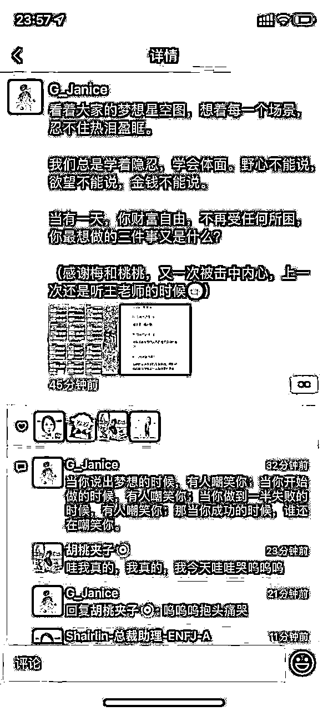

来源：https://a0nfyti51f.feishu.cn/docx/I0NbddfZloH5qKxCjO5cWU4xnJd
大家好，我是梅子。一年前的今天我还被困在做了7年的主业里，自觉温水煮青蛙，一直在寻找主业之外自己还能做什么。摸索着就到了去年8月26日，我邀请一位朋友一起做了个理财社群项目。我们都是0经验，但不影响，3天后，我们的第一期付费社群就跑起来了。
这个社群自此一直在迭代，到今天迭代了3个版本，营收总额达到了36万。希望我们从0到1的经验能帮到其他需要搭建相关社群的圈友们。
从第一期社群营收总共才8000+，到现在第三期的社群营收30万+。社群做好了，能给你带来指数级的营收增长，用户粘性也会越来越高。你在这个社群里待着会觉得舒服、愿意花更多的时间跟这个社群里的人产生更深的链接，这就是我理想中的社群生态。它是由一个个鲜活的人组成，充满了生命力和可能性，随着时间蓬勃生长。
我会从以下4个方面分享我做理财社群从0到1的经验:
我自己是理财7年多的老手了，去年的大盘行情普遍很差，但在我看来，遍地是机会，无论是指数还是可转债还是我熟悉的个股，简直就是打骨折销售。我体验很舒服，但好多我身边和朋友圈里的朋友都在吐槽账户一片绿。
偶尔我分享盈利收获的时候，会有几个朋友来问我理财相关的问题，我发现他们对于理财的认知非常浅。大多都是高位跟风跑进来，还不知道啥呢就哐一下全投进去然后套牢了。本来我以为这样的人只存在在各大论坛和微博，没想到我身边人的含量也不低。
于是我就在琢磨，能不能用我的经验带他们迅速过一遍我走过的路，跟他们分享我总结的经验教训以及稳定盈利的行为指南。反正这些我也都会。他们如果还是维持这个老样子，在理财上会一直吃亏的。
跟这些朋友聊的过程中我也发现：这些朋友对那些网上的理财大V之类的信任度已经非常低了。他们信过，但账户实际表现很差，于是就摆烂，宣称回本就卖，退出市场。但他们在跟我聊的时候，会很愿意听我讲，因为也比较熟悉，他们还会把家人的理财血泪史都跟我讲，然后征求我的意见。在知道了我长期的理财收益率之后，他们其实也都有心向我讨教。所以他们并不是彻底摆烂，而是苦于找不到靠谱的人。
那我，为什么不做这个靠谱的人呢？做身边人最靠谱的理财专家，这就是我察觉到的需求。我想试试。
抱着这个心理，我就一直在寻找机会。我主业是老师，出去分享和讲课不在话下，但自己真是从来没有独立做过一个项目，很虚，我想找个人跟我一起做。
直到胡桃出现，我就确定，这事儿，我做定了。因为她是我很喜欢的一个朋友，她理财也亏得厉害、她和我很多气质都很像，也都着迷于自己亲自去创造的感觉。于是，俩人一拍即合。几乎不眠不休地奋战了3天。
这3天，我俩一边搭建社群框架、课程内容；一边设计海报，第一次这么密集地自己写文案。
下面分别讲讲我们的产品搭建和引流方式。
理财类的产品，知识框架其实不难搭。我自己也是知识付费重度用户，把上过的课觉得比较好的框架借鉴一下，加进自己的实操经验和策略分享就可以了。结合大部分人的投资困境做成了5次大分享。第0次是免费，后面4次付费解锁。
除了理论分享之外，更重要的是社群陪伴，听懂了理论之后，用户在实操上面会非常纠结。毕竟是要掏钱理财的事儿，需要认知上非常确定以及真的能下得去手才行。因此我们社群前期大量地教大家理论知识+由我带着观察市场+捕捉市场机会。 理论听懂了、作业做了、还没到用户实操那一步，我们设计了模拟大赛。在“同花顺”这个APP就可以体验交易的感觉。这样几轮下来，用户的心也就慢慢安定了。
因此，我们的MVP就出来了--理财陪跑营1.0，最开始还没有视频版的讲解，全是文档形式。分享就是图文在群内分享，分享完做成文档汇总。一周一次大分享，每天都有市场观察和机会分析。
不得不说，我们一开始做产品就踩中了hard模式：
图上这个箭头，就是我们第一期产品，一个月间，A股大盘的表现--一路单边下跌坐滑滑梯。尽管我们做了很多的铺垫，预警了用闲钱理财、短时间的涨跌不用太在意，但这种大行情，每天市场观察都观察累了。再怎么说价值没变，他也不觉得这个市场有任何赚钱的希望。
这一期我基本是给大家讲主要的理财品种的底层逻辑，以【分享理财底层逻辑+带大家观察市场&观察我实操】为主，用户们基本没什么实际的理财损失。但因为近距离在看这一天天的下跌，从新手的角度来看真的体验太差了。
这次也让我彻底明白，为啥那些成熟公司的小白理财课不会涉及任何的近距离看市场，防的就是这一手。行情差的时候，没人想理财。
还好我们的用户跟实际操作还隔着一层，主要是听我讲和看我投，自己模拟模拟感受下波动。也因为我不是主要在做个股而是在做可转债，那段时间可转债行情比大盘表现要好点儿，他们也能看到我投的可转债在赚钱。这个部分算是弥补了些体验效果。
但还是挺影响整体体验的，这就让我彻底明白：理财类产品，这么短的时间想出效果，太难。
这一个月的理财陪跑营1.0模式就是我们的MVP，让我们迅速调整了接下来做理财营的方向：时间得拉长。
不得不说，一个项目在前期能够活下来，很大程度上要看初创团队的人格魅力。虽然整个大行情是垮的，但那一个月大家跟着我们近距离地频繁接触，各种互动和体验下来，他们还是非常愿意相信我们的。MVP产品结束后，我跟合伙人本来是打算歇一段时间，等行情有比较明显的反转现象了再考虑招生的事儿，但不少用户找到我们，说一个月时间太短，2.0的产品赶紧搞起来。
于是我们就趁着9月结束后的十一假期开发了时长100天的2.0理财营版本。 这个期间，不开盘，我们日常的分享也结束了，得找个活动让用户记得我们。于是，我们请出了【记账打卡】挑战活动。毕竟是一个大消费节日，用小挑战的形式提醒大家理性消费，省钱这个需求，几乎人人都有。具体活动相关会在第三板块详说，这里简单提一嘴。
2.0的产品我们升级了时长（一个月改成100天），升级了交付形式：从纯文字改成直播+社群分享，也会照顾到更具体的个人理财需求，争取把所有大家遗留的和现有的理财困惑全部解决掉。
又是几乎完全没有休息的节日过完，正式开始2.0的招生。心里老慌了，定的招生目标只有20个人（1.0的营一共收了95人）。我太明白行情对心态的影响，尤其是新手，第一次上来就是这么差的行情，来20个人就不错了。然后发现，开盘第一天，又是大跌。那个时候真的觉得，这一期应该是做不起来了，大家已经对A股毫无信心了。
但还是得试试呀，继续在朋友圈分享市场观察和理财理念，也给用户写信，分享我曾经经历过类似的大跌，以及拉长时间看它其实是多么宝贵的买入机会。
真诚永远有千钧之力，慢慢地，2.0就已经有50+人报名了。当时真的好开心，觉得自己的分享没白做。大家没有因为行情不好而吓破胆，反而有勇气继续跟着我们选择低位买入。
后来我师父--一位财富自由的大佬愿意来营内分享。我知道他这个人有多真诚和多厉害，当时特别开心大佬愿意来我这么小的摊子分享他的见地和他白手起家到现在的经历。有他的加持，加上一些还在观望的人看到后面的行情确实如我所说慢慢好了起来，招生也就逐渐走上了正轨。 1.0的社群我们招了95人，2.0的社群招了132人。
100天的2.0产品运营完之后，我们也彻底确定了我们能做好这事儿，经过几个月的相处和实操，用户也发现我说的都在一次次被验证。那接着续费就顺理成章。因此我们后面就做了3.0一年期的陪跑营产品，如今运营地也非常顺利。
所以，将近一年的时间，我们从3天拉起来的1.0产品，到马不停蹄的2.0和顺理成章的3.0，受益最大的其实还是第一期的产品。迅速跑起来，迅速发现问题，然后针对这些问题改良和迭代，向着最能让用户受益的方式去。
我们的引流很简单粗暴，全部来自：朋友圈。因为我和我朋友都没自己做过产品，更没有公域的经验。我们就单纯想要帮到自己朋友圈里感兴趣的人就好。
刚开始很不好意思的 ，但那个时候顾不上那么多了，那么多事要做，根本没时间内耗。直接就发海报，喊感兴趣的人进群。卖点就是我这个理财经验很丰富、7年稳定盈利的人，会有理论有实操地手把手教理财的正确方式。
第一期的社群内容我们分成了5个大分享，为了吸引大家进群，我们先做福利活动，第一期大分享免费在群内进行。
基本上我们的引流动作就是这些：发海报，广而告之我们有这个免费活动，宣传我们的优势。因为是免费的，而且确实很多人理财方面都有痛点，我又是她们的朋友，信任度自然比外面陌生的人高。因此，大家真的不要小视朋友圈的力量，你的朋友在你搞事业的时候真的会很支持你！你的第一批天使用户就在朋友圈。
1.0和2.0基本全靠我和胡桃拉人，后面效果做起来了，用户也非常信任我们了，3.0的时候就开发了合伙人模式，推荐一个朋友报名给分红10%-20%。效果也不错。有用户2天内就赚了一千多，出去推荐和分享还能输出倒逼输入顺便赚赚钱，何乐而不为呢~通过口碑裂变来的客户，真的非常高概率气味相投。由口碑带来的客户，维护起来真不难。
把人吸引来社群之后，剩下的就是让潜在用户看到你有多靠谱多专业了。快闪群活动和免费分享的重要性不言而喻。
我从一开始出去分享，主打的就是真诚，其他的我也不会。加上7年经验和实操成绩确实比较好，所以大家听完第一期分享的反馈都不错，有人直接想转账（如图1）。气氛既然到这了，那就再往上烘一把。如图2，我们设置了不同的梯度价格。一个月的社群，前20名49, 21-50名89, 51名之后是159。
因为前面的铺垫，大家已经有了足够的兴趣，实力在那，即使是全价159这个价格也不贵。我们也说了这是我们第一次做产品，纯福利价，错过不会再有。立马就有很多人抢着付款，都想抢前20、前50的。
便宜嘛不占白不占，这个心理我们不经意间拿捏对了。图3，把规则说清楚，准备开抢。人爱凑热闹，抢优惠这事儿，都爱干。
为了预防抢位的混乱，我们当时是用的一个小程序工具“接龙”，它方便就方便在可以自动根据接龙时间排序，还可以导出excel表格，这样方便把结果公示出去，不会有扯皮。 有秩序又有参与的刺激感，社群活跃度非常高。
这样预热+分享+后续继续朋友圈喊喊之后，基本前50人来是没啥问题的。最纠结的是51号报名选手，她会觉得怎么就落到了个51号，看着价格拍大腿。损失厌恶，人之常情。
这个时候就需要在内容上下功夫，让真正好的交付说服这批犹豫观望的人：这个价格太值了！根本无需再纠结。错过才是真的亏大了。
于是就来到了最精彩，也是我们这个项目能持续跑下来、越做越好的关键所在:
交付是重中之重。我们这个社群是做理财相关的，但众所周知，理财赚到钱的人很少，多的是啥都不懂、听了个推荐/看了个榜单就激情买入、冲进来被收割的韭菜。也多的是自己亏钱然后骂A股不行、理财都是骗子的人。我们这个项目要做好，就必须得带出实实在在的成绩来，才能让已经对这件事提心吊胆的人放下心来。
因此，想要干波大的，就得从最源头的做起，建立好社群的价值观。于我们的社群而言，最开始要做好的，是树立大家正确的金钱观，接着才是理财的正确方式。
于是，我们做了第一个备受好评的活动：梦想星图
这个活动的灵感来自于《小狗钱钱》这本书。为的是让大家看见钱背后的东西。在奔着赚钱之前，想清楚你赚钱是图啥，把想用钱换的生活方式具象化。写下来，在社群里分享。
借由这个活动，大家从忙碌的生活中有了个可以喘口气的空间，静静地想一想自己理想中生活的样子。这样不会被赚钱这个有些虚的大概念打蒙，且赚钱是无止尽的，我们需要让用户看到他想迈向的终点大概长什么样子。
我们当时用的是飞书文档卡片式的表格记录方式，一方面它不限字数，大家可以自由发挥；另一方面可以在线协作，没有灵感的时候还可以看看别人写好了的，同时还能满足下好奇心。
每个活动发起的时候最重要的是要说明活动出发点，毕竟是新拉的群，一切都要从0开始。你能做成什么样大家都在观望，需要人参与的活动得狠狠戳到他才行。于是，我写了个文档，认真跟大家说了这个活动是什么，需要大家怎么做，也写了示范。这个文档大概2千字，截整图有点大，截了开头大家大概看下：
很快，就有人响应号召写起来了。每个写好梦想的朋友我们都在社群里狠狠鼓励，毕竟这年头，梦想说出来已经需要太多勇气，需要一个好好承接它并给它充分鼓励的地方。
这个活动做得很成功，后来我们还把大家写的卡片做了个大图，也引发了参与者的转发。

这个活动，任何一个做【赚钱】主题的社群主理人都可以用起来，你能借它更了解你的用户和他们想过怎样的生活。我在这其中就看到了想要建女校、建希望小学的梦想。这种力量，远远超过了金钱本身。会让整个社群的能量汇聚起来，大家一起铆足劲奔着目标去的那股劲就起来了。
需要注意的是，你要做好示范和定好规则，比如不能简单就写：我的梦想是赚一个亿。定目标的SMART原则可以先科普一下，然后自己做个示范，用户就懂了。
还有一定要记住，给情绪价值。让用户感受到在你这里大胆说出自己想要的东西是被尊重的，说什么都可以，这个社群永远包容你。
这个活动可以说是给我们的社群定好了基调，互相鼓励着奔着赚钱去。赚钱不可耻，因为远方在召唤。
这个基底打好之后，就可以做下面一件事：记账打卡。
是的，还没到真正的实操这里，但慢就是快，着急的人最容易被割。很多人根本没理过自己的财务状况，每个月大概要花多少、一年大概的花销、自己的现金流和存款，这些都没管过。
于是，借助记账打卡，我们让大家先梳理梳理自己的消费习惯，以及对自己的开销用度有个概念。理财是要用闲钱去投，1-2年以内要花的大钱可得留好。和梦想星图那个活动一样，我们说好了出发点，定好了规矩。设置了个挑战，记账打卡一周瓜分奖金池，奖金由我们来出。
薅官方羊毛这事儿，谁不爱干，于是这个活动也很成功，因为打卡在朋友圈，一定程度上也帮我们做了些宣传，他收获了好习惯和金钱的奖励，我们收获了些曝光度，都开心~
情绪价值和仪式感当然也要拉满，瓜分奖金那头我们也设置了颁奖仪式，做了个榜单，也是让用户充分感受到被尊重和被看见。
梦想星图和记账打卡挑战这两件事做完，金钱观这块就基本没问题了。后面就是正式的干货，给大家讲理财的大原则、介绍各大理财品种的风险和收益、以及从模拟开始带大家一点点实操。
在交付方式上也一直在迭代，最开始是文字+图片模式在群里分享，后来群消息比较多就汇总成了飞书文档，最后升级成了直播+群消息+飞书文档的形式。为了让大家多多参与直播互动，每次直播也都专门做了好看的海报做预告：
也因为一直在完善交付方式，后面无论是课程还是实操，大家都很配合。慢慢地，越来越多人通过实操赚到了钱。我们也鼓励大家赚到钱了发红包随喜，于是就有了本文第一张截图中大家说“这个群是我红包领的最多的群”这一幕。
再分享2个我们做得比较好的日常运营中的活动：100天小目标大挑战和经典理财书籍共读。
理财，终究是跟钱很近很近的游戏。一方面我们要正视钱，一方面又不能被短期的涨跌带跑了。这两个活动，一个就是让大家最直接地看到跟钱相关的小目标，一个则是磨练心智、武装大脑用的。
100天的小目标，我作为一个普通人，让大家看看我大概10万块的本金，100天赚1万，并且是卖出到手的1万，不是浮盈。整个过程全部公示，买了啥卖了啥，赚了多少，全部公开给营内。我的合伙人胡桃当时定的小目标则是赚钱相关，100天赚10万，也是毫无保留地分享。
最终，我们俩都超额完成了这个挑战。大家也全程见证。简直像是个养成系。也因为这件事，大家对我们的认可度更高了，我们也很开心，最终还做了个复盘的视频发到了视频号跟大家分享。这么一分享，还偶然间打开了后面我们去视频号直播的征程，非常奇妙。
第二个活动是经典理财书籍共读，我们让群内人自行组队，由我们挑选书籍并说明推荐理由，群内人自行报名组队。给一个月时间，读书+小组分工，最终开直播跟大家分享这本书里学到的东西。还搞了个组与组之间的PK，最终效果也非常炸裂，我们因此跟很多用户之间的了解和链接更深了、群内用户之间也成了彼此的战友。那次读书直播分享的时长达到了3个多小时，非常尽兴。
总结一下我们的交付和日常运营：
日常有直播、有各种互动、有知识星球给大家做沉淀复盘。一切都是为了用户舒服地学、舒服地赚。
学习本身不是件快乐的事，尤其理财做得好需要克服人性的贪婪和恐惧，专业又温暖的陪伴就至关重要。陪伴到位了，用户赚到钱了，发红包了，复盘了，能量也就流动起来了。社群的活力就会源源不断。口碑也就慢慢积累下来了。
于是，我们一路走到了今天，1.0的社群95人，2.0的社群132人，3.0的社群150人。客单价也越来越高，用户赚钱了，我们自然也赚到了。
一切从人出发，以终为始。发现需求，吸引人进来，以无敌的交付让用户真正受益并愿意分享出去。
以上就是我在这个无敌难做的理财领域做出了点成绩的社群经验分享了。
愿大家都能搭建自己喜欢的社群生态，富贵又喜悦地蓬勃生长~